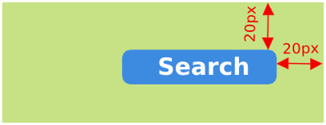
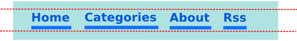
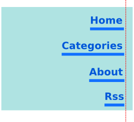

Created by Ivan Shubin
You can start using Galen even before you start working on your html. You can think of the page design, write tests and then implement the website
Identify devices for which you will write your Galen tests and make drafts of your website for these devices
@ desktop ---------------------------------- side-panel width: 280 to 300px near: main 10px right menu near: main 20px top contains: menu-item-home, menu-item-categories, menu-item-blog @ mobile ---------------------------------- side-panel width: 100% of screen/width near: main 10px bottom main width: 100% of screen/width near: menu 10px bottomGalen offers various constraints in human readable format. Use them to describe the page layout on different devices
Implement html for your website
Once the html is finished you can define the references to all your objects in spec using one of the locators: id, css, xpath
=========================================================
# Here are all object definitions
header id header-container
header text css #header-container h1
menu xpath //ul[@data-name='menu']
=========================================================
These references are used by Selenium to locate objects on the page
$ galen check home-page.spec
--url "http://example.com/home"
--size 1024x800
--include desktop
--htmlreport report.html
The best way to test responsive design is to tell Galen how elements are located relatively to each other on the page
search-textfield near: search-button 20px left
search-button inside: header 20px top right
menu-item-home hotizontally all: menu-item-categories, menu-item-about, menu-item-rss
menu-item-home vertically right: menu-item-categories, menu-item-about, menu-item-rss
============================================================ # You can specify multiple references in one line # Galen will fetch all elements and replace * with numbers starting from 1 menu-item-* css #menu li ============================================================ # Now you can parameterize object specs # The following syntax will create object specs # for all menu items from 1 to 7 [ 1 - 7 ] menu-item-@ width: 150px height: 40px